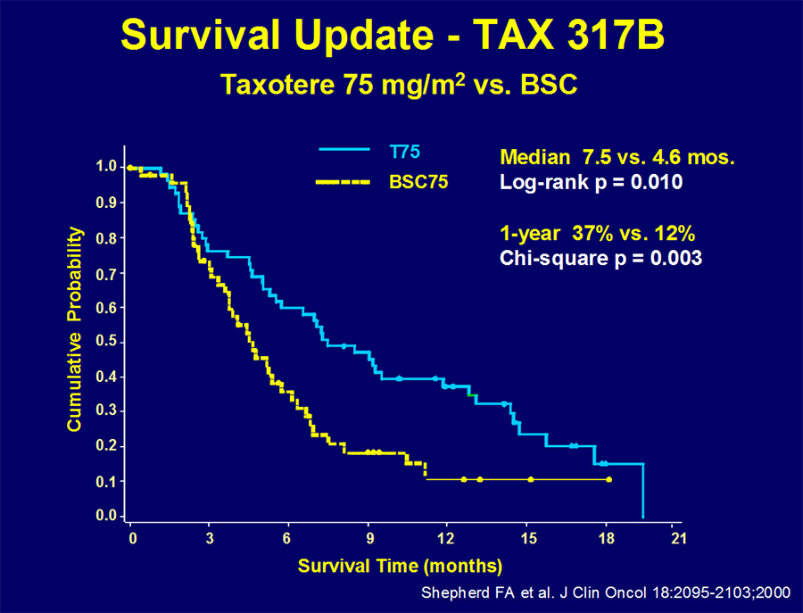
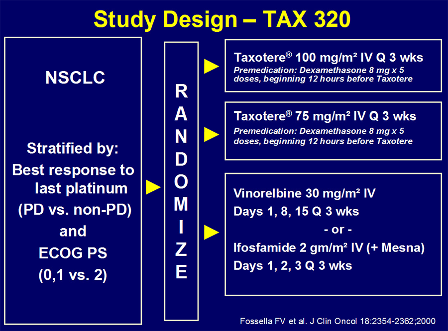
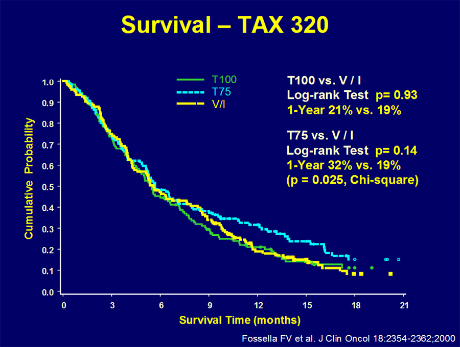
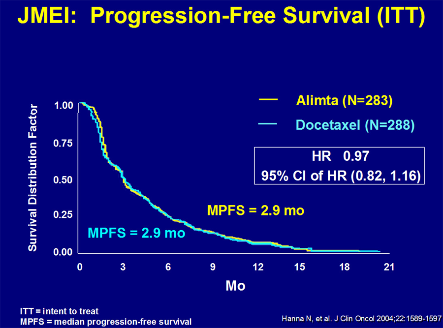
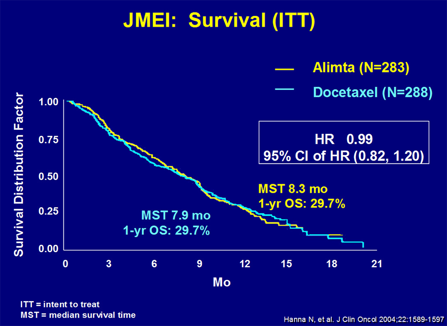
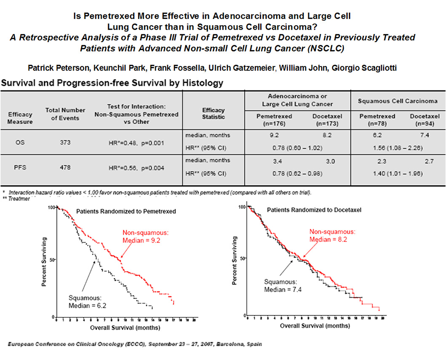

MÓDULO 5 : Tratamiento de la enfermedad avanzada en segunda línea

5.2 Quimioterapia
En segunda línea, los dobletes de platino no han demostrado beneficio sobre la monoterapia con un solo fármaco pero la quimioterapia en monoterapia si ha demostrado un aumento de SG y de la calidad de vida.
Los fármacos con indicación como tratamiento de segunda línea son docetaxel y pemetrexed y erlotinib en caso de no disponer de otras opciones de tratamiento.
En los distintos estudios realizados con quimioterapia en segunda línea de tratamiento, se obtienen respuestas y medianas de supervivencia bastante inferiores a las conseguidas en primera línea.
Los pacientes que progresan tras dos líneas de tratamiento disponen de escasas opciones de tratamiento; los estudios con gemcitabina, paclitaxel, vinorelbina o etopósido arrojan resultados poco alentadores con TR de entre 2.3 y 8.8%, medianas de SG de alrededor de 4 m y tasas a 1 a de SG del 5.5%.
Docetaxel
Dos estudios randomizados consecutivos han demostrado beneficio en supervivencia a favor de docetaxel a dosis de 75 mg/m2: con una mediana de SG de 7,5 meses, con una mediana de duración de respuesta de aproximadamente 26 semanas y una tasa de SG al año aproximadamente del 37%.
Shepherd et al en el estudio TAX 317compararon docetaxel frente al mejor tratamiento de soporte.
Fosella et al en el estudio TAX 320 compararon docetaxel frente a monoquimioterapia con vinorelbina o ifosfamida.
Posteriormente dos estudios randomizados demostraron similar eficacia y mejor perfil de tolerabilidad con un esquema semanal de docetaxel frente al esquema trisemanal.



Pemetrexed
Hanna et al, publicaron el estudio JMEI con 571 pacientes que comparó en segunda línea docetaxel vs pemetrexed.
Fue un ensayo fase III, en el que pemetrexed demostró no-inferioridad frente a docetaxel en términos de TR, SLP y SG (mediana de SG 8,3 meses con pemetrexed vs. 7,9 meses con docetaxel), con un perfil de tolerabilidad algo más favorable con menor tasa de neutropenia, de alopecia y de toxicidad gastrointestinal.
En un análisis retrospectivo acerca de la influencia de la histología del tumor sobre el efecto del tratamiento en la SG, este fue favorable a pemetrexed en los pacientes con histología predominantemente no escamosa (n=399), con medianas de SG de 9,3 meses con pemetrexed frente a 8,0 meses con docetaxel (HR 0,78 [IC 95 % 0,61 – 1,00], p=0,0047) y fue favorable a docetaxel para la histología escamosa (n = 172; HR 1,56 [IC 95 % 1,08 – 2,26,] p=0,018).
Pemetrexed está indicado únicamente en pacientes con CNMP de histología no escamosa.


